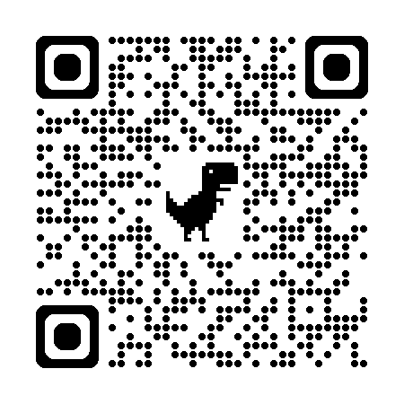

Welcome to this workshop! Before we start coding, let's do a quick introduction.
Geeta Kakrani AI Consultant | GDE (Google Developer Expert) in AI and AI-TPU
Connect with me on LinkedIn:

Scan the QR code above or search "Geeta Kakrani" on LinkedIn to connect!
Positive : Feel free to connect with me on LinkedIn if you have questions after the workshop. I'm always happy to help beginners get started with AI.
In this codelab, you will build a simple AI chatbot app that runs directly on a mobile device — no internet or server needed! This is called on-device AI.
You will use:
By the end of this workshop, you will have a working chatbot app on your phone or emulator that can answer questions — completely offline!
Let's get started!
Flutter is a free tool made by Google that lets you build apps for Android, iOS, Web, and Desktop — all using one codebase.
On Windows:
C:\src\flutter
C:\Program Files\
On macOS/Linux:
cd ~/development
unzip ~/Downloads/flutter_macos_*.zip
On Windows:
flutter\bin
On macOS/Linux: Add this line to your
~/.bashrc or ~/.zshrc file:
export PATH="$PATH:`pwd`/flutter/bin"
Then run:
source ~/.zshrc
Open a terminal or command prompt and run:
flutter doctor
This command checks your system and tells you if anything else needs to be installed (like Android Studio, Xcode, or a device).
Positive : If you see some ❌ marks, don't worry! Just follow the
instructions shown by flutter doctor to fix them one by
one.
Install one of these code editors:
After installing, add the Flutter and Dart plugins/extensions from the IDE's marketplace.
To check connected devices, run:
flutter devices
Gemma is a family of small, lightweight, open AI models built by Google, using the same research and technology used to build the larger Gemini models.
Gemma models are available on:
For this workshop, we will use a version of Gemma that is specially
converted into .task or .bin format so it
can run efficiently on mobile devices using MediaPipe. This format is
optimized to be fast and small enough to run on a phone.
Positive : Think of Gemma like a "mini brain" that fits inside your pocket device, ready to chat with you anytime, even without internet!
MediaPipe is a free, open-source framework built by Google that makes it easy for developers to add AI features (like face detection, hand tracking, or now, even chatbots) into their apps.
Running an AI model like Gemma directly on a phone is not simple — you need to manage things like memory, model loading, and generating text token by token. MediaPipe takes care of all this hard work for us.
MediaPipe provides a ready-made solution called the MediaPipe LLM Inference API, which allows developers to:
Here is the simple flow of our chatbot app:
User types a message in Flutter app
↓
Flutter app sends the message to MediaPipe LLM Inference API
↓
MediaPipe runs the Gemma model on the device
↓
Gemma generates a text response
↓
MediaPipe sends the response back to Flutter
↓
Flutter app shows the response in the chat screen
MediaPipe provides a Flutter plugin called
flutter_gemma which connects Flutter
directly to the MediaPipe LLM Inference API. This is the plugin we
will use in this workshop.
Now let's start building! Open your terminal and run:
flutter create gemma_chatbot
cd gemma_chatbot
This creates a new Flutter project called
gemma_chatbot with a default sample app.
Connect a device or start an emulator, then run:
flutter run
You should see a simple counter app. This confirms your Flutter setup is working correctly.
Open the file pubspec.yaml in your project and add the
flutter_gemma package under dependencies:
dependencies:
flutter:
sdk: flutter
flutter_gemma: ^0.2.0
Note : Always check pub.dev/packages/flutter_gemma for the latest version number before adding it.
Now run this command in your terminal to download the package:
flutter pub get
.task format (for example,
Gemma 3 1B IT, int4 quantized, converted for
MediaPipe)
.task model file to your computer — for
this workshop, keep the file name as
gemma3-1B-it-int4.task
Positive : The model file can be large (several hundred MB to a few GB). Make sure you have a stable internet connection and enough storage before downloading. Smaller, quantized (int4) models load faster and use less memory on the device.
We will add this model file into our Flutter project's
assets folder in the next step, when we build the
GemmaService class.
Now let's build a simple chat screen. Open
lib/main.dart and replace all the content with this:
import 'package:flutter/material.dart';
void main() {
runApp(const MyApp());
}
class MyApp extends StatelessWidget {
const MyApp({super.key});
@override
Widget build(BuildContext context) {
return MaterialApp(
title: 'Gemma Chatbot',
theme: ThemeData(primarySwatch: Colors.deepPurple),
home: const ChatScreen(),
);
}
}
class ChatMessage {
final String text;
final bool isUser;
ChatMessage(this.text, this.isUser);
}
class ChatScreen extends StatefulWidget {
const ChatScreen({super.key});
@override
State<ChatScreen> createState() => _ChatScreenState();
}
class _ChatScreenState extends State<ChatScreen> {
final TextEditingController _controller = TextEditingController();
final List<ChatMessage> _messages = [];
bool _isLoading = false;
void _sendMessage() {
final text = _controller.text.trim();
if (text.isEmpty) return;
setState(() {
_messages.add(ChatMessage(text, true));
_isLoading = true;
});
_controller.clear();
// We will connect this to Gemma in the next step
}
@override
Widget build(BuildContext context) {
return Scaffold(
appBar: AppBar(title: const Text('Gemma Chatbot')),
body: Column(
children: [
Expanded(
child: ListView.builder(
padding: const EdgeInsets.all(12),
itemCount: _messages.length,
itemBuilder: (context, index) {
final msg = _messages[index];
return Align(
alignment: msg.isUser
? Alignment.centerRight
: Alignment.centerLeft,
child: Container(
margin: const EdgeInsets.symmetric(vertical: 4),
padding: const EdgeInsets.all(12),
decoration: BoxDecoration(
color: msg.isUser
? Colors.deepPurple.shade100
: Colors.grey.shade200,
borderRadius: BorderRadius.circular(12),
),
child: Text(msg.text),
),
);
},
),
),
if (_isLoading) const LinearProgressIndicator(),
Padding(
padding: const EdgeInsets.all(8.0),
child: Row(
children: [
Expanded(
child: TextField(
controller: _controller,
decoration: const InputDecoration(
hintText: 'Type your message...',
border: OutlineInputBorder(),
),
),
),
IconButton(
icon: const Icon(Icons.send),
onPressed: _sendMessage,
),
],
),
),
],
),
);
}
}
Run the app to check the UI:
flutter run
You should now see a chat screen with a text box and a send button, though it doesn't talk to Gemma yet. We'll fix that next!
Instead of writing all the Gemma logic directly inside our chat
screen, we will create a separate helper class called
GemmaService. This keeps our code clean and easy to
understand.
Open pubspec.yaml and add one more dependency, along with
the flutter_gemma package we added earlier:
dependencies:
flutter:
sdk: flutter
flutter_gemma: ^0.2.0
flutter_gemma_mediapipe: ^0.2.0
Run:
flutter pub get
For this workshop, we will load the model directly from the app's assets folder.
assets in your project root (if
not already created)
.task model file into it, for example:
assets/gemma3-1B-it-int4.task
pubspec.yaml, add:flutter:
assets:
- assets/gemma3-1B-it-int4.task
Positive : Make sure the model file name in
pubspec.yaml exactly matches the file name in your
assets folder, otherwise the app will not find it.
Create a new file at lib/gemma_service.dart and add this
code:
import 'package:flutter_gemma/flutter_gemma.dart';
import 'package:flutter_gemma_mediapipe/flutter_gemma_mediapipe.dart';
class GemmaService {
bool isModelLoaded = false;
dynamic _chat;
Future<void> loadModel() async {
try {
await FlutterGemma.initialize(
inferenceEngines: [MediaPipeEngine()],
webStorageMode: WebStorageMode.none,
);
await FlutterGemma.installModel(
modelType: ModelType.gemma4,
).fromAsset('assets/gemma3-1B-it-int4.task').install();
final model = await FlutterGemma.getActiveModel(maxTokens: 2048);
_chat = await model.createChat();
isModelLoaded = true;
} catch (e) {
print("Model load error: $e");
isModelLoaded = false;
}
}
Future<String> getResponse(String userMessage) async {
if (!isModelLoaded || _chat == null) {
return "Model is loading...";
}
try {
await _chat.addQueryChunk(Message.text(text: userMessage, isUser: true));
final response = await _chat.generateChatResponse();
if (response == null) return "No response generated.";
// 1. First check if it directly has a .textResponse property
try {
if ((response as dynamic).textResponse != null) {
return (response as dynamic).textResponse.toString();
}
} catch (_) {}
// 2. If not, extract the string from between TextResponse("...")
String rawString = response.toString();
if (rawString.startsWith('TextResponse("') && rawString.endsWith('")')) {
return rawString.substring(14, rawString.length - 2);
} else if (rawString.startsWith('TextResponse(') && rawString.endsWith(')')) {
return rawString.substring(13, rawString.length - 1);
}
return rawString;
} catch (e) {
return "Error: $e";
}
}
}
loadModel() sets up the MediaPipe engine, installs the
Gemma model from our app's assets, and creates a chat session.
It sets isModelLoaded = true once everything is ready.
getResponse() sends the user's message to Gemma
using addQueryChunk, then asks for a reply using
generateChatResponse(). Since the response object's
exact shape can vary, the code carefully checks for a
.textResponse field first, and falls back to cleaning
up the raw text if needed.
Note : This kind of defensive parsing (checking multiple possible response formats) is a good habit when working with fast-evolving AI packages, since exact return types can change between versions.
Now let's wire our GemmaService into the chat UI we
built in Step 7.
At the top of lib/main.dart, add:
import 'gemma_service.dart';
Inside _ChatScreenState, replace the earlier model
variables with:
final GemmaService _gemmaService = GemmaService();
bool _isModelReady = false;
@override
void initState() {
super.initState();
_initModel();
}
Future<void> _initModel() async {
await _gemmaService.loadModel();
setState(() {
_isModelReady = _gemmaService.isModelLoaded;
});
}
Update the _sendMessage function like this:
Future<void> _sendMessage() async {
final text = _controller.text.trim();
if (text.isEmpty || !_isModelReady) return;
setState(() {
_messages.add(ChatMessage(text, true));
_isLoading = true;
});
_controller.clear();
final response = await _gemmaService.getResponse(text);
setState(() {
_messages.add(ChatMessage(response, false));
_isLoading = false;
});
}
Update your AppBar to show model status:
appBar: AppBar(
title: Text(_isModelReady ? 'Gemma Chatbot' : 'Loading model...'),
),
Positive : The first time the model loads, it may take a few seconds to a minute, depending on your device. This is normal — the model file is being read into memory and a chat session is being created.
flutter run
What is the capital of India?
Positive : Congratulations! If you see a reply, your on-device AI chatbot is working! 🎉
Problem |
Possible Fix |
|
|
Follow the exact instructions it shows, one at a time |
App crashes on model load |
Check that the model file path is correct and the file was
pushed successfully using |
Very slow responses |
Use a smaller Gemma model variant, or test on a more powerful device |
Out of memory error |
Close other apps, or use a smaller quantized model |
|
|
Check the installed package version and refer to its example app on pub.dev |
Well done! In this codelab, you learned:
flutter_gemma package
If you enjoyed this workshop, connect with me on LinkedIn (QR code and details in the first step) for more AI content, workshops, and updates.
Thank you for attending, and happy building!